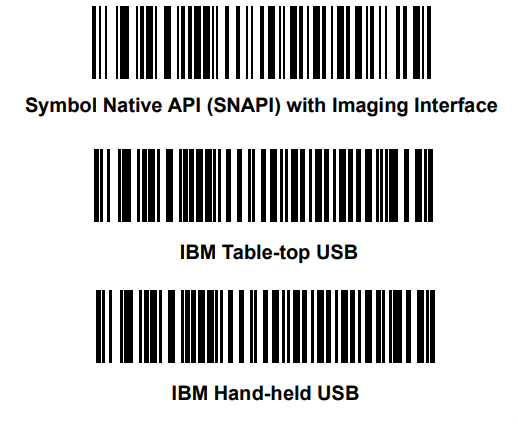

Installation
DataWedge for Scanners is distributed as a binary pack from which the exe can be directly executed.
Connect a Zebra USB scanner(s) to the computer and put the scanner into USB IBM Handheld or IBM TableTop or USB SNAPI mode by scanning one of the bar codes below.

Figure 1: Scanner Host Mode Switching Barcodes
For Zebra Cordless direct Bluetooth connection Refer to the article Pairing Cordless Scanner to Windows 10 with Scan-to-Connect Utility.
Run the DWS for Windows
To run DWS, execute the "DataWedge for Scanners.exe” in the binary pack. For custom application configurations, please refer to the following sections on application settings and log configurations.
Application Settings
The following includes the default settings of DWS, which can be found in the AppSettings.xml file. For custom settings, modify the tag values in the AppSettings.xml file as required.
<?xml version="1.0" encoding="utf-8" ?>
<?xml-stylesheet type="text/xsl"?>
<config>
<application_startup_mode>
<!-- Minimized to tray on startup {Enabled = 1, Disabled = 0} Default = {0} -->
<minimized_to_tray>0</minimized_to_tray>
<!-- Launch on Windows Startup {Enabled = 1, Disabled = 0} Default = {0} -->
<launch_on_startup>1</launch_on_startup>
</application_startup_mode>
<monitoring_frequency>500</monitoring_frequency> <!-- In milliseconds -->
<active_focus_applications>
<scan_state_delay>500</scan_state_delay> <!-- Scanner enable disable delay in milliseconds -->
<!--name = {Application Name string in Title bar} -->
<!--matching_criteria = {Contains, Exact} -->
<application name="Word" matching_criteria="Contains" enable_hid_emulator="True"/>
<application name="Chrome" matching_criteria="Contains" enable_hid_emulator="False" />
<application name="Notepad" matching_criteria="Contains" enable_hid_emulator="True" ddf_configuration="2"/>
<!-- application tag options include: -->
<!-- enable_hid_emulator = {True/true, False/false} -->
<!-- ddf_configuration = {DDF value defined in CoreScanner's Config.XML} -->
<!-- adf_rule_sets_enable/adf_rule_sets_disable = {ADF rule number(s) defined in the scanner's configuration. ADF rules listed for the disable tag will be superseded by ADF rules listed for the enable tag. Values = {1 to 15}} -->
<!-- mdf_group_enable/mdf_group_disable = {MDF group number(s) defined in the scanner's configuration. MDF groups defined with the disable tag will be superseded by MDF groups defined with the enable tag. Values = {1 to 9}} -->
<!-- udi_gs1/udi_hibcc/udi_iccbaa = {select to apply the UDI Parsing defined in the scanner's configuration. UDI Parsing can be applied only if there are no MDF configurations defined. Values = {on,off}} -->
<!-- label_parsing = {Enable (on) to apply the Label Parsing defined in the scanner's configuration. Label Parsing can be applied only if there are no MDF or UDI Parsing (GS1,HIBCC,ICCBAA) configurations defined. Values = {on,off}} -->
<!-- blood_bag_parsing = {Enable (on) to apply the Blood Bag Parsing defined in the scanner's configuration. Blood Bag Parsing can be applied only if there is no MDF or UDI Parsing (GS1/HIBCC/ICCBAA) or Label Parsing configurations defined. Values = {on,off}} -->
<!--
dl_parsing = {Enable (on) to apply the Driver's License Parsing defined in the scanner's configuration. Values = {on,off}}
scan_state = {Status of the Scanner configurations. If the given value is "on", the scanner will be enabled, if "off" scanner will be disabled. Values = {on,off}}
See Examples below
<application name ="Notepad" matching_criteria = "Exact" enable_hid_emulator = "True" adf_rule_sets_enable="2,3" adf_rule_sets_disable="4,5,6" mdf_group_enable ="1,2" scan_state = “on” />
<application name ="Word" matching_criteria = "Contains" enable_hid_emulator = "True" adf_rule_sets_enable="1" udi_gs1 = "on" udi_hibcc = "on" udi_iccbaa = "off"/>
<application name ="Chrome" matching_criteria = "Exact" enable_hid_emulator = "False" adf_rule_sets_disable="1,2,3" mdf_group_disable ="1,2,3" dl_parsing ="on" />
-->
</active_focus_applications>
</config>
-
<application_startup_mode> - Settings that apply when DataWedge for Scanners (DWS) is launched.
-
<minimized_to_tray> - Configures whether DWS should be minimized to the system tray at start up or displayed on the Desktop.
- 0 (Disabled) - DWS will be displayed on the Desktop.
- 1 (Enabled) - DWS will be minimized to the system tray upon startup.
-
<launch_on_startup> - Configures whether the DWS should be launched at host PC start up.
- 0 (Disabled) - Do not launch on host PC start up.
- 1 (Enabled) - Launch on host PC start up.
- <monitoring_frequency> - Specifies how often DWS keeps checking a matched application as per the configured application settings. The default value is every 500 milliseconds.
- <scan_state_delay> - Specifies the delay to wait before executing the scan enable/disable command if it's specified using scan_state. The default wait time is 500 milliseconds.
-
<active_focus_applications> - Settings pertaining to specific applications configured in the DWS tool.
Settings Available for each application:
- name - Specifies the application name string from its window title bar to match for data formatting.
- matching_criteria - Specifies whether the name should be used for an exact match or its string contained within the application title bar.
- enable_hid_emulator - Specifies whether focus on the configured application should enable/disable the Simulated HID feature in CoreScanner.
- ddf_configuration - Specifies the Driver Data Formatting (DDF) configuration to be used for the focused application. The DDF configuration is based on the DDF options available in CoreScanner's Config.XML file, located at “C:\Program Files\Zebra Technologies\Barcode Scanners\Common” in Windows. The DDF configuration specified in the DWS configuration file selects which DDF pattern to be configured in CoreScanner. By default, specifying a ddf_configuration with a value of 2 will format the barcodes read to have a suffix after the barcode data. The characters to be appended as the suffix can be configured in the CoreScanner's Config.xml file. For more information, visit Driver Data Formatting (DDF)
-
adf_rule_sets_enable / adf_rule_sets_disable - Advanced Data Formatting (ADF) specifies the data formatting to be applied for a barcode using the scanner's ADF capabilities. Using the focused application, DWS enables or disables ADF rule sets in a scanner that already contains pre-programmed ADF rules. Note that ADF support on DWS is only available for scanners supporting ADF version 2.0 and above. Enabling or disabling ADF rule set(s) are configured as follows.
- adf_rule_sets_enable="1,2,3"
- adf_rule_sets_disable="4,2,6"
- Up to 15 rule sets can be programmed in a scanner supporting ADF version 2.0 and above.
- Invalid values included for ADF rule sets will be ignored by DWS.
- Note - Once ADF rule sets are enabled or disabled via DWS, changing the application focus will not revert the ADF settings back to its original settings.
-
mdf_group_enable / mdf_group_disable - Multicode Data Formatting (MDF) specifies the data formatting to be applied for a barcode using the scanner's MDF capabilities. Using the focused application, DWS enables or disables MDF groups in a scanner that already contains pre-programmed MDF rules. Enabling or disabling MDF group(s) are configured as follows.
- mdf_group_enable ="2,1,6"
- mdf_group_disable = "8,3,5"
- Up to 9 groups can be programmed in a scanner that supports MDF capabilities.
- Invalid values included for MDF groups will be ignored by DWS.
- Note - Once MDF groups are enabled or disabled via DWS, changing the application focus will not revert the MDF settings back to its original settings.
-
udi_gs1 - Unique Device Identification (UDI) parsing specifies the UDI data formatting to be applied for a barcode using the scanner's UDI capabilities. Using the focused application, DWS enables or disables UDI, HIBCC or ICCBAA rules in a scanner that already contains pre-programmed UDI rules. UDI, HIBCC and ICCBAA rules can co-exist in a scanner, and can be configured per focused screen as follows. (Examples shows for both “on” and “off” options)
- udi_gs1 = "on"
- udi_hibcc = "off"
- udi_iccbaa = "off"
- Invalid values included for MDF groups will be ignored by DWS.
- Note - Once UDI rules are enabled or disabled via DWS, changing the application focus will not revert the UDI settings back to its original settings. If MDF attributes are also specified together with UDI attributes in DWS settings, MDF will be prioritized over UDI configurations.
-
label_parsing - Label Parsing specifies the label parsing data formatting to be applied for a barcode using the scanner's UDI capabilities. Using the focused application, DWS enables or disables label parsing rules in a scanner that already contains pre-programmed label parsing rules. Enabling or disabling label parsing rules are configured as below.
- label_parsing = "on" or ("off")
- Invalid values included for label parsing will be ignored by DWS.
- Note - Once label parsing rules are enabled or disabled via DWS, changing the application focus will not revert the label parsing settings back to its original settings. If MDF/UDI rules are also specified in DWS settings, MDF or UDI rules will be prioritized over label parsing configurations.
-
blood_bag_parsing - Blood Bag Parsing specifies the blood bag parsing data formatting to be applied for a barcode using the scanner's blood bag parsing capabilities. Using the focused application, DWS enables or disables blood bag parsing rules in a scanner that already contains pre-programmed blood bag parsing rules. Enabling or disabling blood bag parsing rules are configured as below.
- blood_bag_parsing ="on" or ("off")
- Invalid values included for blood bag parsing will be ignored by DWS.
- Note - Once blood bag parsing rules are enabled or disabled via DWS, changing the application focus will not revert the blood bag parsing settings back to its original settings. If MDF/UDI/Label parsing rules are also specified in DWS settings, MDF, UDI or Label parsing rules will be prioritized over blood bag parsing configurations.
-
dl_parsing - DL Parsing specifies the Driver's License parsing data formatting to be applied for a barcode using the scanner's DL parsing capabilities. Using the focused application, DWS enables or disables DL parsing rules in a scanner that already contains pre-programmed DL parsing rules. Enabling or disabling DL parsing rules are configured as below.
- dl_parsing ="on" or ("off")
- Invalid values included for DL parsing will be ignored by DWS.
- Note - Once DL parsing rules are enabled or disabled via DWS, changing the application focus will not revert the DL parsing settings back to its original settings.
-
scan_state - Scan State specifies enabling or disabling the scanner based on the focused application. Enabling or disabling the scanner is configured as below.
- scan_state = "on" or ("off")
- Invalid values included for scan state will be ignored by DWS.
- Note - Once scanner is enabled or disabled using scan_state, changing the application focus will not revert the scan state settings back to its original settings.
Log Configurations
DWS Tool incorporates open-source library Log4net as the logging framework for the application. Log4net utilizes a configuration file that specifies the log configurations used when creating log content.
The following describes the customizable configuration elements in logging for DWS tool.
-
The default log file path is specified to be the current user's Public Documents path, and the log files will be created in path “Public\Documents\Zebra\DWS\Logs”. To change the log file path to a custom path, the path given under “value” property can be modified as required.
<file name="File" value="${Public}\Documents\Zebra\DataWedgeForScanners\Logs\DataWedgeForScanners.log"/>
-
Number of log files created before re-circulating the log files are specified using the property below.
<maxSizeRollBackups value="5" />
-
The maximum file size per log file can be specified in either KB or MB units. When the specified size is reached for a log file, a new log file will be created to include the subsequent log entries, until the maximum file count is reached.
<maximumFileSize value="1MB" />
-
The log pattern is specified in the parameter “ConversionPattern”. The default log pattern is as below, and each log element is described below.
<param name="ConversionPattern" value="%-5d{MM-dd-yyyy hh:mm:ss.ffff} [T%thread] [%p] [%type] [%m] [%line] %n" />
- %-5d = Distance between log components
- MM-dd-yyyy hh:mm:ss.ffff = Date and time
- T%thread = 'T' followed by thread ID
- %p = log type, Info/Error/Warn/Debug
- %type = Class name
- %m = log message
- %line - log message line number
- %n = next line indicator
The DWS log configuration file is name "nlog.config" as can be found in the same location as the DWS binaries.
In addition to DWS log files, the tool generates a separate log file that includes the following system information. This file is created at the first launch of the application and maintained in the same location as the log file path for DWS.
================================================================================
System Information
================================================================================
DWS Version: <DWS tool version>
CoreScanner Version: <CoreScanner version installed in the PC>
Operating System Name: <Windows OS version>
Operating System Build ID: <Windows OS build number>
Processor Architecture: <Windows Architecture>
Number of Processors: <Number of processors>